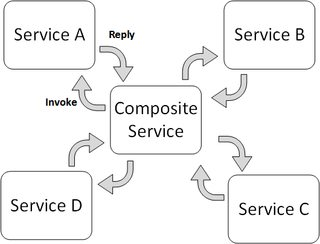
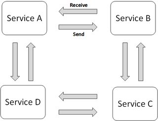

Microservices
It is architectural style that focuses on discrete services instead of a monolithic design. Microservices architecture breaks down an application into smaller, independent services that each serve a specific business capability or function. These services are developed and deployed independently, often with their own codebase and database.
Principles
-
Independent development and scaling of individual services. Developers can work on small, focused teams, and each service can be scaled independently based on its specific requirements and on demand, making resource allocation more efficient.
-
Each microservice can se different technology stacks and databases for each service, depending on the requirements. This flexibility allows you to choose the best tool for each job.
-
Microservices can be deployed independently, making it easier to implement CI/CD pipelines for each service. This results in faster and more frequent deployments with less risk.
-
More resilient than a monolithic system. If one service fails, it doesn't necessarily impact the entire system, as long as other services can continue to function.
-
Managing the interactions between multiple services can introduce complexity in terms of service discovery, communication, and monitoring.
Orchestration
Orchestration is an approach where one of the services acts as the coordinator and orchestrator of the overall distributed state change, managing the execution of tasks or services It defines the order and flow of activities and often involves a central point of control that dictates what should happen next.
The orchestrator is responsible for making decisions and ensuring that each component of the system performs its tasks in the prescribed sequence. It can be simpler to design and implement for relatively small-scale systems with a limited number of components. However, as the system grows in complexity, the central orchestrator can become a bottleneck and may make the system less scalable and more challenging to maintain.
It is easier to implement fault tolerance and error handling because the central orchestrator can monitor the execution of tasks and react to failures by rerouting or retrying steps. It also provides a central point for monitoring and logging, making it easier to track the progress of tasks and diagnose issues.
There is less direct communication between services since most interactions are mediated by the orchestrator. This can reduce the need for services to be aware of each other's existence.

Choreography
Choreography is an approach of service coordination where participants exchange events without a centralized point of control. With this pattern, each service performs a local transaction and publishes events that trigger local transactions in other services. Each component of the system participates in decision-making about a business transaction's workflow, instead of relying on a central point of control.
The interaction and coordination between services are determined by a set of predefined rules or contracts. There is no single point of control, and the overall behavior of the system emerges from the interactions between the participating components. It can be more suitable for large-scale and complex distributed systems because it distributes the decision-making and control among individual components. As new services are added or existing ones are modified, the system can remain more flexible and scalable.
However, choreographed systems can be harder to visualize and debug, especially as the number of interactions between services increases. Also, relies on the individual services to handle errors and failures gracefully, making it more challenging to ensure consistent error-handling strategies across the entire system. It may require more advanced monitoring and tracing tools to gain insights into the interactions between services and to identify bottlenecks or errors.
Finally, it requires services to communicate directly with each other, which can lead to more inter-service communication. This increased communication can result in more complex service discovery and network traffic management.

Architecture styles
Services in a microservice architecture needs to communicate between each other. There are different architectural styles to achieve this communication:
-
REST: Representational State Transfer is an architectural style that uses standard HTTP methods (GET, POST, PUT, DELETE) to interact with resources. RESTful services are stateless, meaning that each request from a client contains all the information needed to process the request. REST is simple to understand and implement, and it can be used over any protocol that supports request/response semantics.
-
RPC: Remote Procedure Call is a protocol that allows a program to execute code on a remote server. A popular RPC framework is gRPC.
Patterns
- Aggregator
- Anti-Corruption Layer
- API Gateway
- Backend for Frontend (BFF)
- Bulkhead
- Circuit Breaker
- CQRS
- Database per service
- Distributed Transaction
- Event driven
- Saga Pattern
- Service Mesh
- Sidecar Pattern
- Strangler Fig